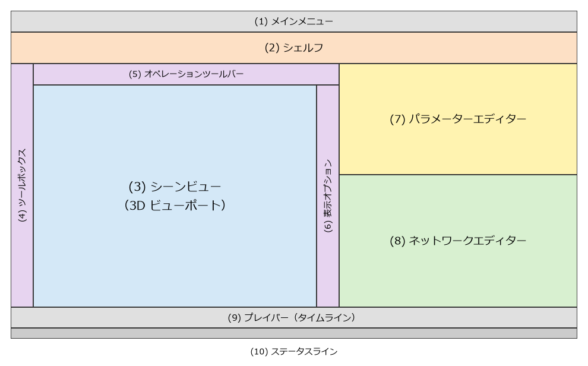

画面と基本操作
この章では、Houdini の画面の構成と、ビューポート、ネットワークエディター、パラメーターエディターの基本的な操作を説明する。
起動
Houdini は、Houdini Launcher（Houdini のインストールとライセンスの管理を行うプログラム）から、またはインストール時に作られるショートカットから起動する。Apprentice のライセンスは、Houdini Launcher で SideFX 社のアカウントにログインして取得する。ライセンスの取得とインストールの手順は、SideFX 社のウェブサイトで案内されている。
画面の構成
起動すると、図 8 のような構成の画面が表示される。

図 8 Houdini のメインウィンドウの構成（模式図）
名前 |
役割 |
|---|---|
|
ファイルの保存や読み込み、ウィンドウの表示などのメニュー。 |
|
よく使う機能を呼び出すボタン（シェルフツール）を並べた棚。ツールを押すと、必要なノードが自動的に作られる。 |
|
3 次元のシーンを表示する領域。ビューポートとも呼ぶ。 |
|
選択、移動、回転、拡大縮小などのツール。 |
|
選択中のノードの主なパラメーターを表示する。 |
|
ビューポートの表示方法（点の番号、法線など）を切り替えるボタン。 |
|
選択中のノードのパラメーターを表示し、編集する。 |
|
ノードのネットワークを表示し、編集する。 |
|
アニメーションの再生と、現在のフレームの変更を行う。 |
|
処理の状況やメッセージを表示する。 |
画面を区切った各領域をペイン（pane）と呼ぶ。1 つのペインには複数のタブを持たせることができ、タブを切り替えて別の種類の表示に変えられる。ペインのタブの右端にある + のボタンから、新しいタブを追加できる。本資料では、次の 2 種類のタブを追加して使う。
Geometry Spreadsheet: ノードの出力するジオメトリの中身（点の位置やアトリビュートの値）を表の形で表示する。ジオメトリとアトリビュート で使う。
Python Shell: Python の対話型のシェル。 で別のウィンドウとして開くこともできる。Python による操作 で使う。
Houdini では、作業の多くをネットワークエディターとパラメーターエディターで行う。シェルフツールは、ノードを作る手間を省くための補助と考えるとよい。
ビューポートの操作
ビューポートで視点を動かすには、Space キーを押したままマウスをドラッグする。Space の代わりに Alt を押してもよい。
操作 |
結果 |
|---|---|
Space + LMB でドラッグ |
視点を回転する（タンブル）。 |
Space + MMB でドラッグ |
視点を平行移動する（トラック）。 |
Space + RMB でドラッグ、またはマウスホイール |
視点を前後に移動する（ドリー）。 |
Space + H |
シーン全体が見えるように視点を戻す。 |
Space + G |
選択している物が見えるように視点を移す。 |
形状を選んで移動する操作もビューポートでできるが、本資料では、パラメーターに数値を入力して形状を作る。数値で作る方が、後から変更しやすく、手順を正確に再現できるためである。
ネットワークエディターの操作
ネットワークエディターは、ノードを作り、つなぐための領域である。
操作 |
結果 |
|---|---|
Tab |
ノードを作るメニュー（Tab メニュー）を開く。ノードの名前の一部を入力すると絞り込める。 |
MMB でドラッグ |
表示を平行移動する。 |
マウスホイール |
表示を拡大、縮小する。 |
H |
全てのノードが見えるようにする。 |
G |
選択しているノードが見えるようにする。 |
ノードをダブルクリック、または選択して Enter か I |
ノードの中のネットワークに入る。 |
U |
1 つ上の階層のネットワークに戻る。 |
ノードの出力から別のノードの入力へドラッグ |
ワイヤーでつなぐ。 |
Y を押しながらワイヤーを横切るようにドラッグ |
ワイヤーを切る。 |
ノードの上で MMB を押し続ける |
ノードの情報（要素の数、アトリビュート、エラーなど）を表示する。 |
ノードの上側の突起が入力（input）、下側の突起が出力（output）である。データは上から下へ流れる。ノードの両端にある色の付いた部分はフラグである。フラグについては ノードとネットワーク で説明する。
パラメーターエディターの操作
ネットワークエディターでノードを選ぶと、パラメーターエディターにそのノードのパラメーターが表示される。
値を変えるには、入力欄に数値を入力して Enter を押す。数値の入力欄では、数式（例えば
1.2 / 2）や、他のパラメーターを参照する式も使える（パラメーターとエクスプレッション）。入力欄の上で MMB を押してドラッグすると、値を連続的に変えられる。
パラメーターのラベルの上で Ctrl + MMB をクリックすると、値が既定値に戻る。
パラメーターのラベルにマウスを重ねると、内部名（Python や VEX から参照するときの名前）を含む説明が表示される。例えば Box ノードの Size の内部名は
sizeで、その 3 つの成分の内部名はsizex、sizey、sizezである。パラメーターのラベルの上で RMB をクリックすると、パラメーターの値のコピー、参照の貼り付け、キーフレームの設定などのメニューが開く。
ファイルの保存
作業したシーンは、（Ctrl+S）で保存する。Houdini のシーンファイルを hip ファイルと呼ぶ。Apprentice で保存すると、非商用の形式（拡張子 .hipnc）になる。
hip ファイルを保存したディレクトリは、$HIP という変数で参照できる。例えば、シミュレーションの結果やレンダリングの画像を $HIP/render/table.jpg のように hip ファイルからの相対的な場所に書き出すと、hip ファイルとその出力をまとめて別の場所に移せる。
hip ファイルには、ノードのネットワークとパラメーターが保存される。ネットワークから計算できる形状そのものは、基本的には保存されない。開いたときに、ネットワークから計算し直される。
ヘルプの引き方
Houdini には、詳しいヘルプが付属している。
パラメーターエディターの右上にある ? のボタンを押すと、選択中のノードのヘルプが開く。ノードの機能と全てのパラメーターの説明が載っている。
メニューから、ヘルプ全体の目次を開ける。VEX の関数や Python（HOM）のリファレンスもヘルプに含まれている。
同じ内容は SideFX 社のウェブサイトでも公開されている（参考文献）。ウェブサイトのヘルプは最新のバージョンの内容なので、使っているバージョンと異なる場合がある。